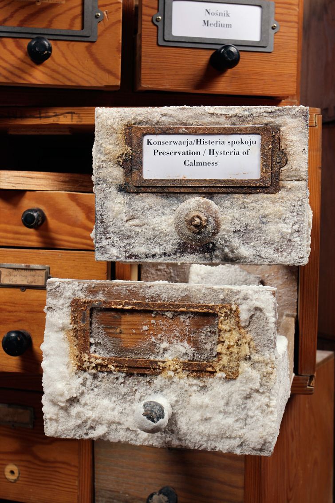
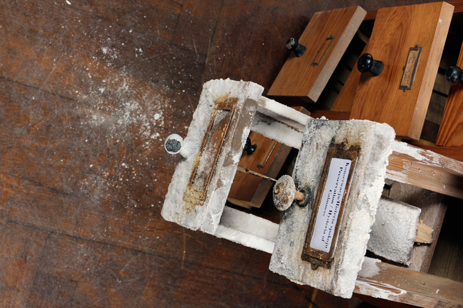
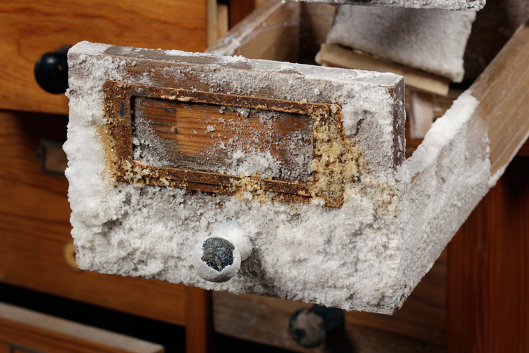
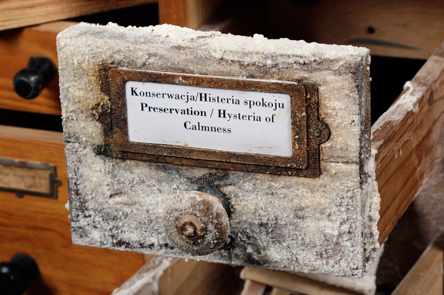

HISTERIA SPOKOJU. KONSERWACJA





instalacja przygotowana specjalnie na wystawe Katalogu Entropii Sztuki 2013.
drewniane szufladki poddane procesowi krystalizacji soli.
fot. K. Krukowski




instalacja przygotowana specjalnie na wystawe Katalogu Entropii Sztuki 2013.
drewniane szufladki poddane procesowi krystalizacji soli.
fot. K. Krukowski